The object ⇒ a fork, a rice paddle
Ideas developed ⇒ Myki scanner, glider, a remote, a transportation, a gun, a sound materialiser, a giant slide / elevator, a curing light.
It's a fun activity particular to boost my generation of ideas, creatives, and force myself to think out of the box. It's quite difficult when the brain just not functioning, or sticking to what I usually think of (my usual thinking process, if this make sense).
I misinterpreted the exercise, all the crazy units should have a interface that user can react to, but why can't the object itself be interactive? For example the sound materialiser. It make the sound characterised and tangible for people to see and touch, hence its an interactive object / item.

Prototype. HOORAY!
The exciting part in web design.
In Hashtag Cyberstar, I learn the new way of making / presenting paper prototype, which including the "interaction" in the process. This is very useful for a UX student, because we need to think about how elements on website influence user's thoughts or behaviour. Sometimes I would have ideas for user interaction, but it's vague and only lives in my imagination. I do not have the ability to make animation nor sketches to present or document the idea; hence paper prototype has introduced the approach that I can apply for my ability.
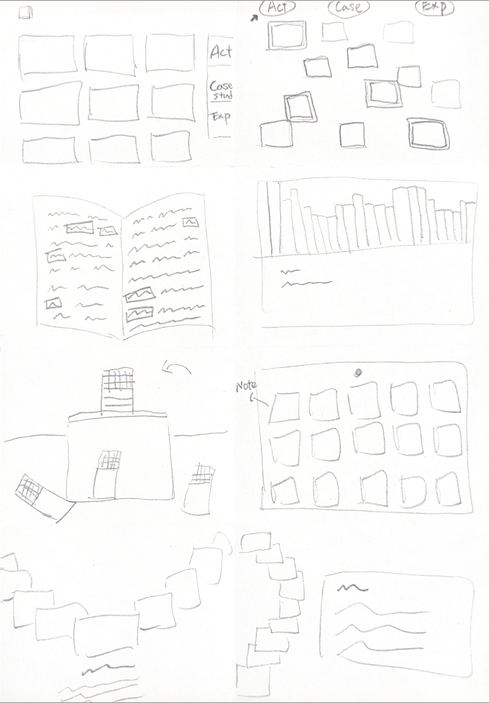
I always hated this exercise. Just like the Affordances of "Gesture", it forced to think deeper an wider, and that is what i'm not very good at. This exercise is perfect for me to train myself, but I just never liked it.
From the work I can tell that sometimes i'm still live in the usual thinking process. I think there are certain traits that I often think of when I design. "Workbook", then I stuck in the "book", why it has to be a book? It can be all sort of thing just not book, but I'll be trapped in the word "book" for the whole d*mn cycle, plus with the limited time that crazy 8 required, so I ended up with many ideas surrounded with "book". This is probably why I never liked crazy 8…
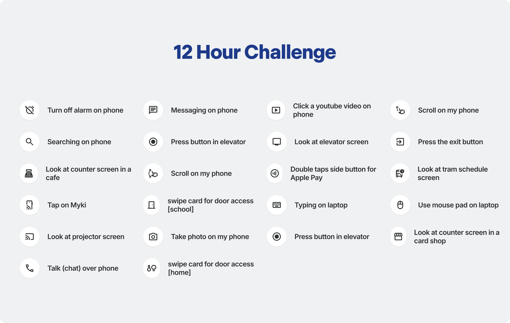
1. Turn off alarm on phone
2. Messaging on phone
3. Click a youtube video on phone
4. Scroll on my phone
5. Searching on phone
6. Press button in elevator
7. Look at elevator' screen
8. Press the exit button for door access
9. Look at counter' screen in a cafe
10. Scroll on my phone
11. Double taps side button on my phone for Apple Pay
12. Look at tram schedule' screen
13. Tap on Myki
14. swipe card for door access [school]
15. Typing on laptop
16. Use mouse pad on laptop
17. Look at projector' screen
18. Take photo on my phone
19. Press button in elevator
20. Look at counter' screen in a card shop
21. Talk (chat) over phone
22. swipe card for door access [home]
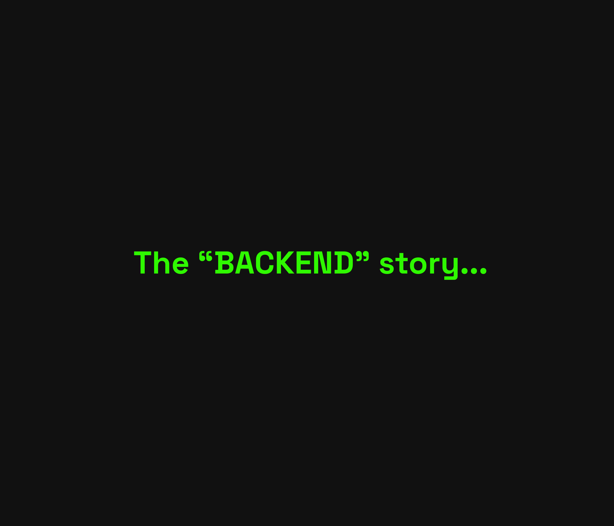
The concept behind the whole site is not too well considered, but it's quite complecated in my mind.
The story begins:
I am a UX student who trained to become a "good designer", by that, I was thought to be "less is more", "grid and alignments", and more sets of rule that ties me to become a "good designer."
Do I like that? I think the answer is YES. I like minimise my design, I like grid and alignments, but at the same time I never design something intuitive, by that I mean something that is my first thought.
I do design basically everyday, but every time I design something, there's always many planning and questoins marks that I doubt: 'does the layout make sense', 'does it against Heuristics?'. I never stop questioning and verify my work.
I want to do something intuitive, the pure though that do not required a process of 'is this a good design', and I think Interactive Media is the opportunity.
So I use one of the first image that I imagine what would my workbook look like when I first heard about it. I would like to provide the freedome for user to view each card based on their will; if they like it to be grid, there's the grid chiose; if they want them to be without order, they already are.
By giving the freedom to users, I think I might walk closer to what I want to achieve. Maybe just purely go agasit the UX rules a little bit, and see what would people respond to that.
Workbook A for me is like a experiment, I might switch back to UX norms OR do something crazier, I do not know, but I'm pretty excited about what would the future me would want to do, and I will make it out for him.
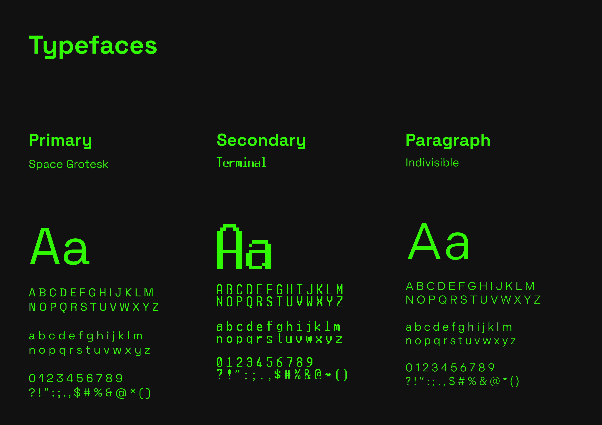
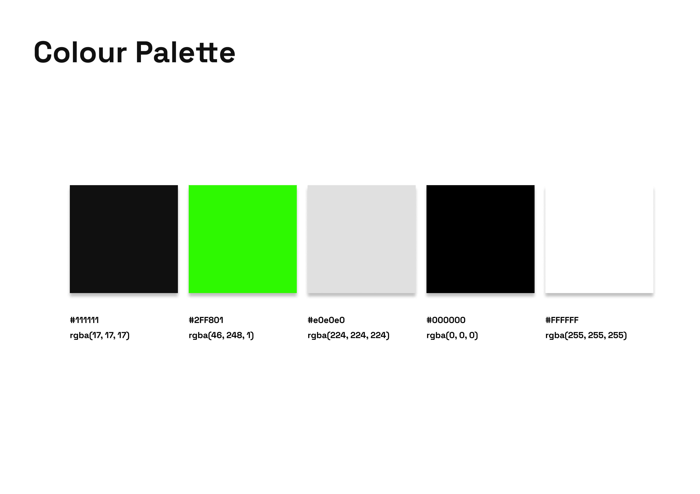
The style of this workbook is all about "digital", "cyber world", "8-bits"... which pretty dark with colours and tones and a bit of secret vibe.
In my opinion (stereotype), interaction on screen or digital device, is always a computer science job. So implement the digital coding style is what I imaging of the term "Interactive Media".
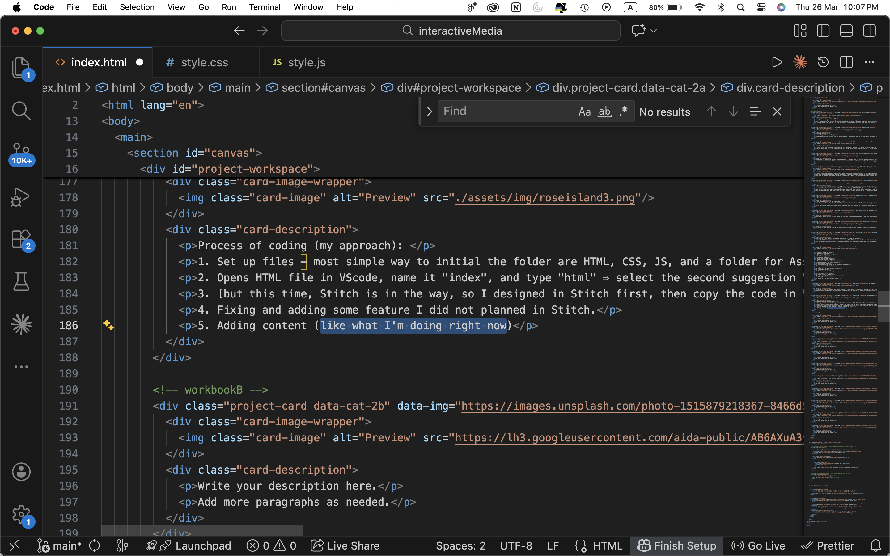
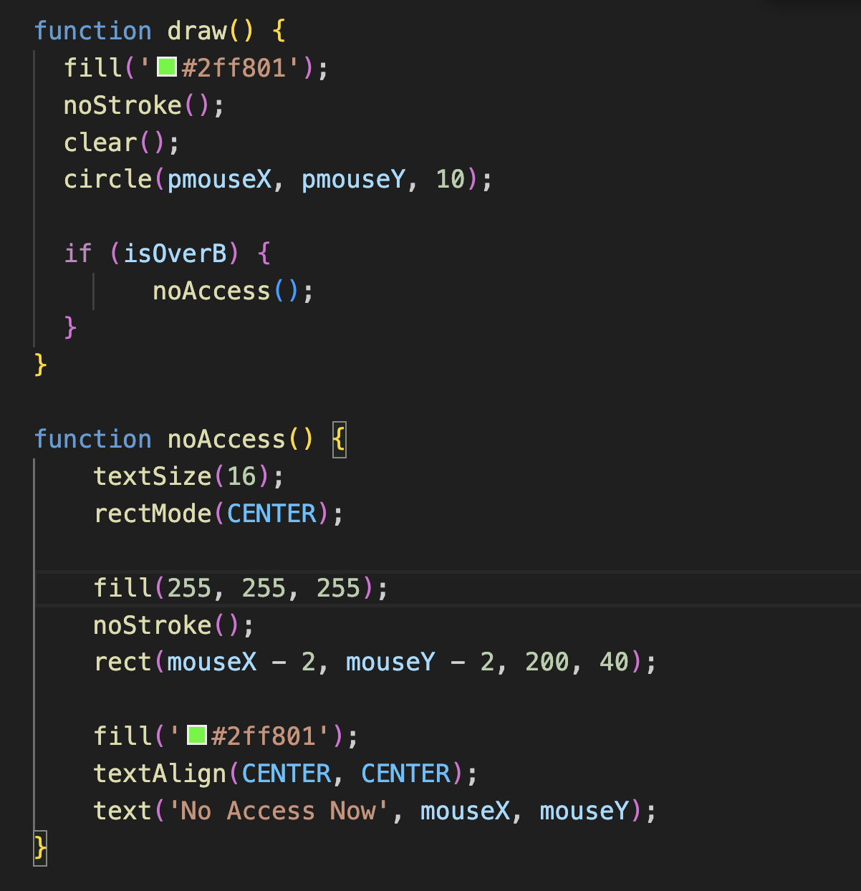
Process of coding (my approach):
1. Set up files – most simple way to initial the folder are HTML, CSS, JS, and a folder for Assets.
2. Opens HTML file in VScode, name it "index", and type "html" ⇒ select the second suggestion "html:5", start from here then I can start doing my HTML.
3. BUT THIS TIME, Stitch is in the way, so I designed in Stitch first, then copy the code in VScode to continue my web coding
4. Fixing and adding some feature I did not planned in Stitch (I ask Claude to fetch my old project to replace those logic I do not understand, and I fix by hand if needed)
5. Adding content (like what I'm doing right now)
6. Test it, review it, fixing. Repeat this process hundred times.
7. I added p5 at last minutes. Same process as before – coding, test it, review, fix. I repeated multiple times (took me a half an afternoon).
8. Final check
9. Push to GitHub
10. Publish
Example of my coding process:
I was coding the p5 into existing JS, where I met a bunch of promlems.
Firstly, the cursor is not showing on the screen, so I need to look into that, search it on google or ask Claude to identify where's the bug at, then looking for solution: p5 reference, stackoverflow, Github etc. And I come back to VScode to try what I might find useful, and start the debugging iteration over time, test it out, and make it work!
One thing I find difficult is the way to link JS and p5. I would consider p5 is another language (because its styling), but at the same time, it link to JS.
For example, I was doing "noAccess" function where it required the existed JS (about the hover on workbook B card), so it can detact through conditional statement. And interestingly, I had to work back and forth, between two different language (in my opinion), but they are actually same type of language, unlike CSS and JS has differnet job. This is quite fun to do compare to the old way – <canvas>, and adjust CSS, then JS. In p5, I can directly make the style (drawing), and attach it to conditions.
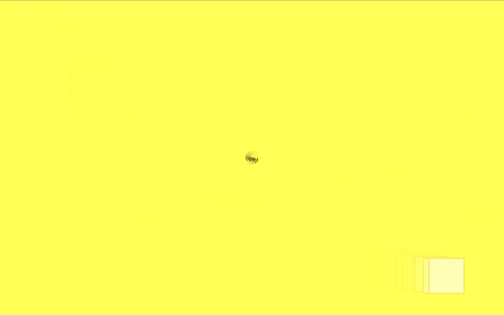
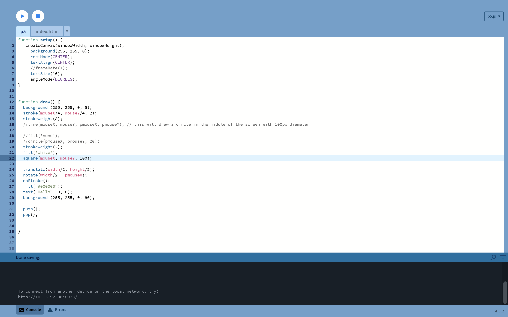
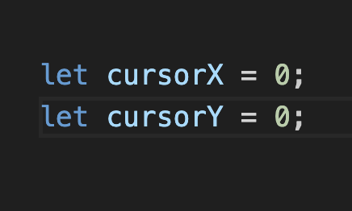
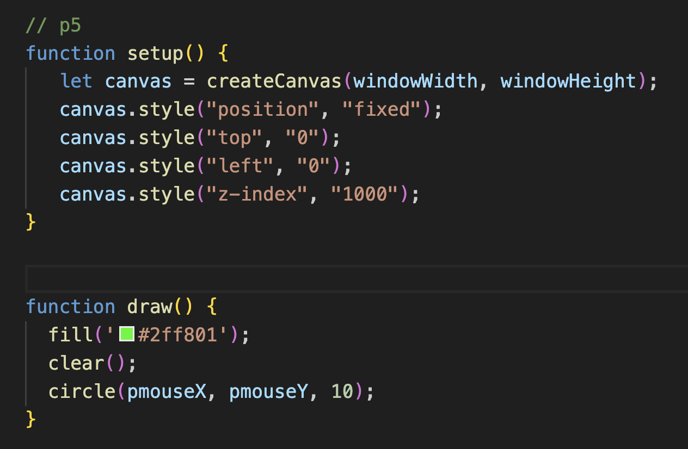
On the last date before summiting Workbook A – March 27, we learned p5 in class. I knew p5 in Hashtag CyberStar, but I did not use it nor understand it, but on the class, I find p5 is quite interesting.
It does not required to work in two tabs (HTML and JS) like I used to, and it react faster and earlier to spot bug or mistakes.
Although, I think it’s a bit illogic in terms of the way it structure and writing.
Here’s some feature I implement:
1. Circle Custom Cursor
2. No Access Cursor
3. Scroll Down Cursor
I just learn p5 today (on the submition date, it's 6:55pm ALREADY!), so what I can do is exploring some extention of today's takeaway, cursor seems like a good chiose.
I have custom cursor in my portfolio website, and it's done by pure JS. Iy required lot of mouse setting! But p5 is more simplier than that.
In situation of mixing JS and p5, there are a bit challenge and fun at the same time (more info in the Coding page).
One thing I met is I used mouseX and mouseY already in the regular JS, I'm not sure if p5 only accepct the actual parameters as mouseX and Y, so I changed the variables to cursorX and cursorY, so that p5 can use its default parameters.
I am excited to see what I can achieve with p5, especially after skimming through the book "Generative Design: Visualize, Program, and Create with JavaScript in p5.js", so many awesome projects interests me! I might try to recreate some of the projects in the website during Mid Sem Break if time allowed.
Visit Generative Design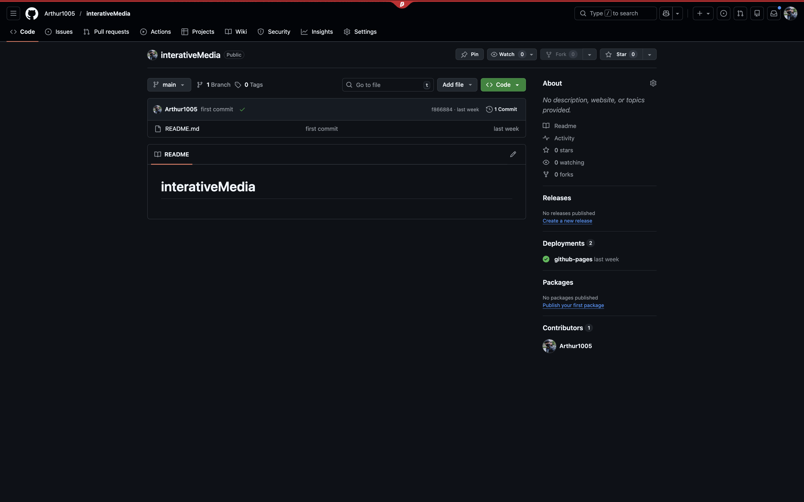
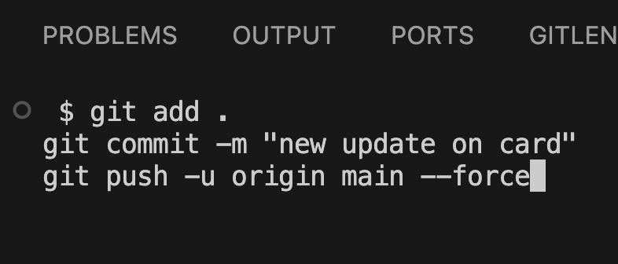
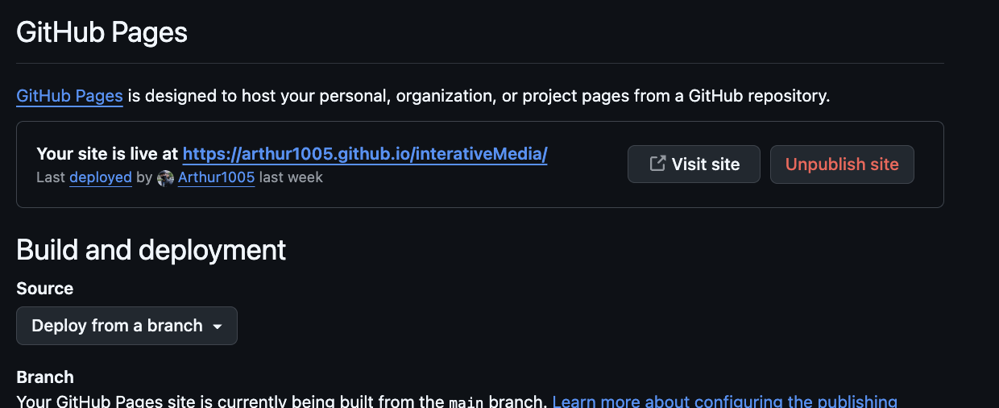
GitHub was used when I need to publish website for another subject: INFO20005 User Interface Development, so I have expereience of pushing codes up to GitHub.
One thing I find difficult when I tried to push my Hashtag Cybarstar portfolio – the file size is too large that exceed the GitHub limitation. I did my research, and compressed some assets including many videos, and it succeeded because I forced push it… not sure if this is a good practice in this context, but it worked well as result.
Visit My Github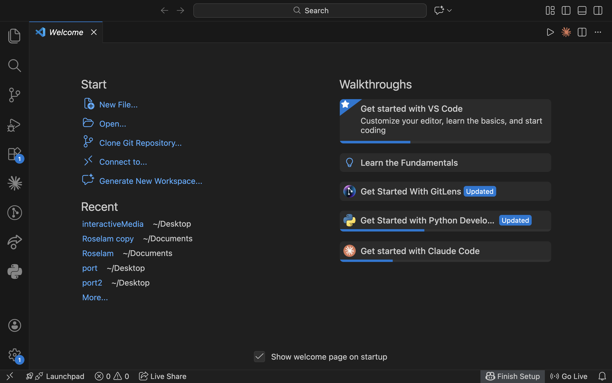
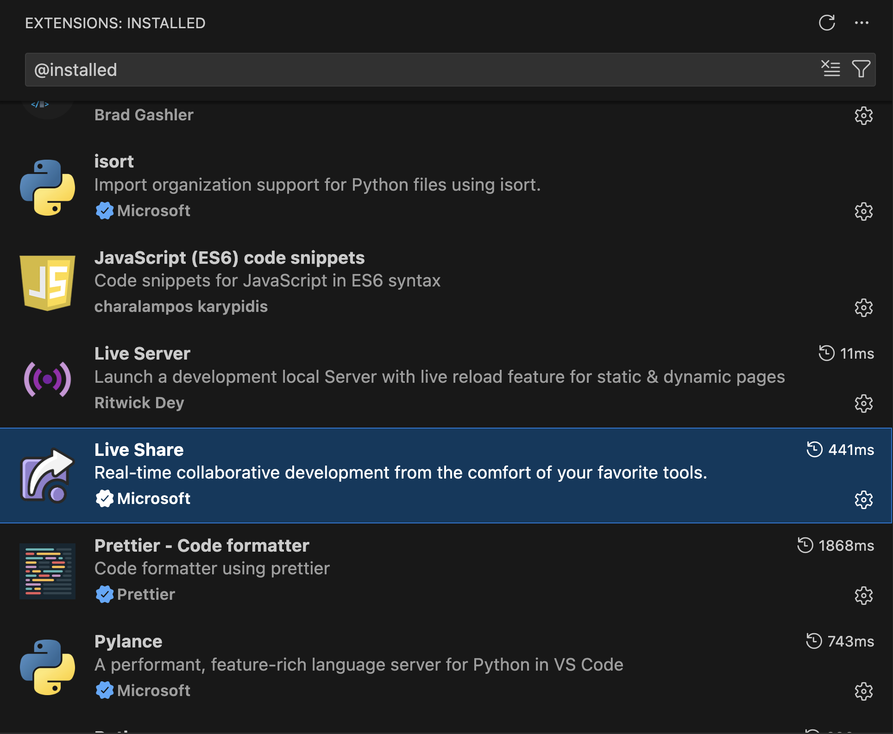
VScode is my friend too. I don't use it much compare to Figma, but when I code , always VScode. I can't really compare it with other software because I never use something else. The only one I can compare with is Neocities. Neocities has the characteristic of serving as web server, which user can publish website directly through neocities; for VScode, it is just a code editor.
I like how flexible is VScode with lots of extensions depends on my preference, though I don't actually use most of them (only something like autocomplete and Claude sometimes).
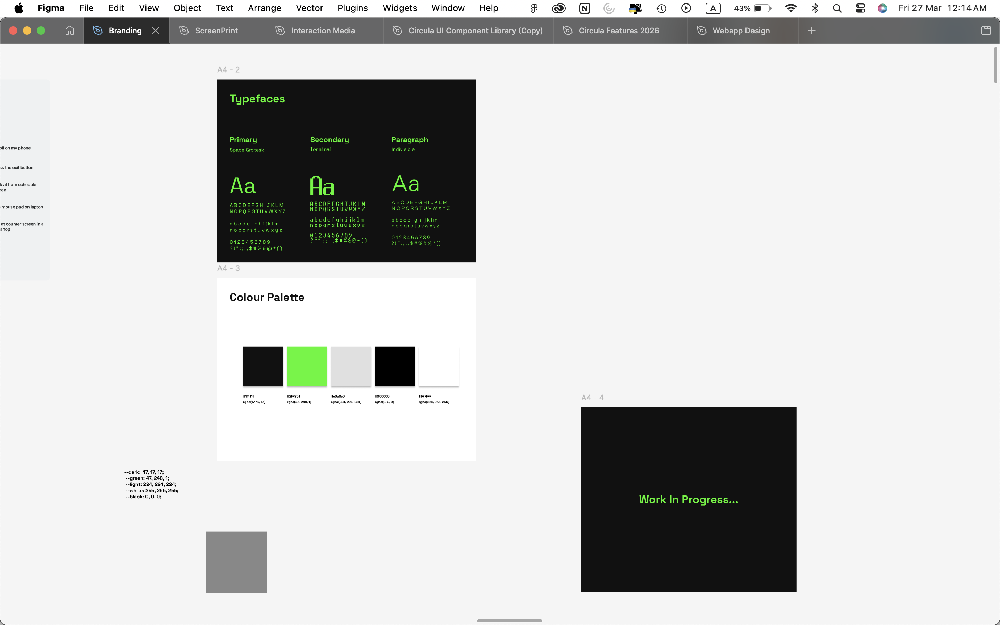
Figma and I are old friends now. I use it everyday for design task, quick notes, and idea generation. It is just like my personal secretary that can hand in a good styled information.
I was using adobe series for most of visual work (I used to be a video editor in the good old day, not anymore). The problem with adobe series is the RAM and memory is cost for my laptop (he's very fragile TBH), so when I introduced to Figma in my freshman, I instantly fell in love.
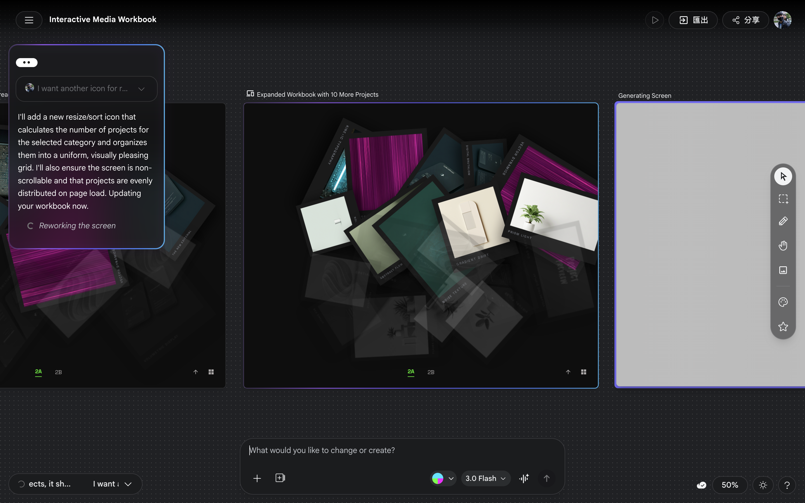
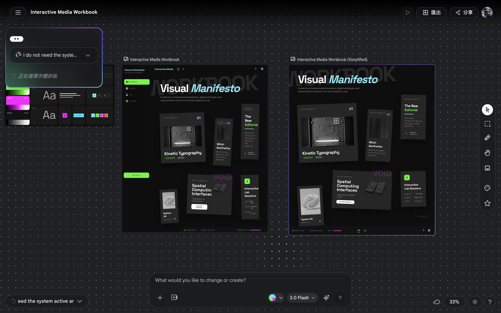
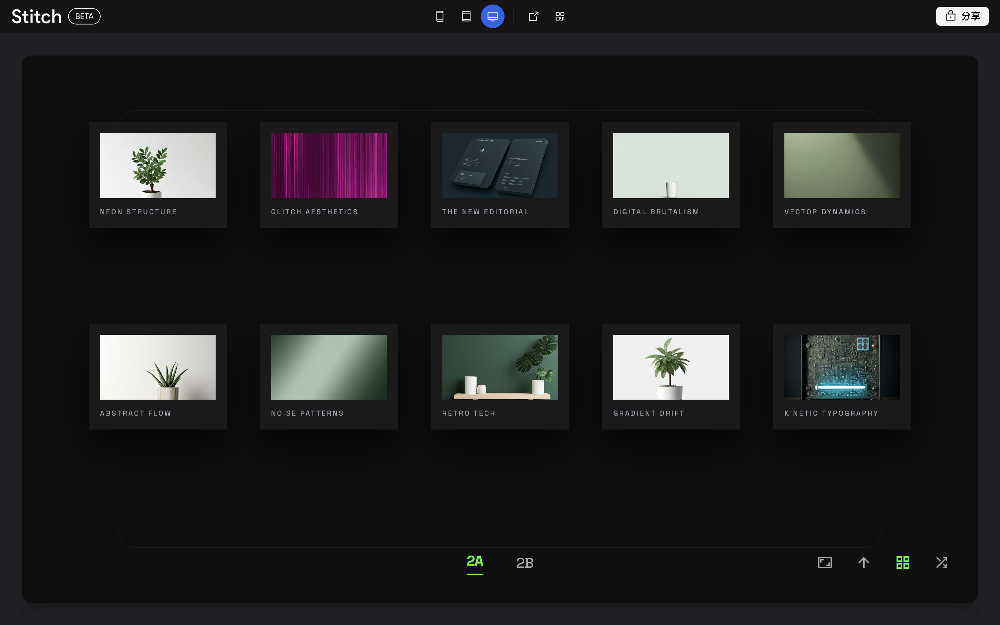
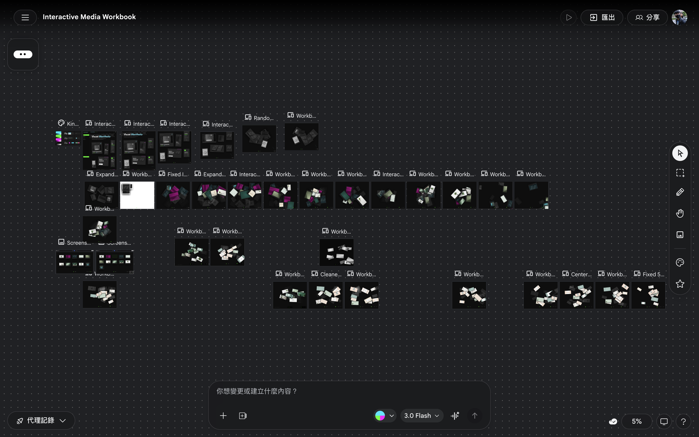
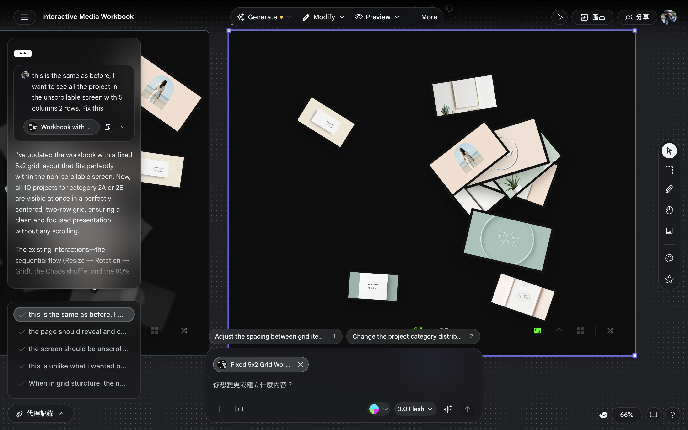
I love and hate Stitch at the same time...
From the perspective of a student, Stitch is awesome. It could save multiple times of design and developing in a few minutes; from the perspective of a UX designer in the short future, Stitch is nightmare. This is the first thought, did I have other interpretation? Maybe, but currently, nightmare is the best term to descriebe Stitch's positioning.
I need a work to have income ⇒ pay bills and keep me alive. Stitch is a software that basically can replace me (maybe not fully, but close enough). I heard from my colleague about his job application journey: "I'm stuck right in the between. My experiences are not qualified enough to be a senior UX designer, but at the same time, my experiences are not just a junior designer too. I even receive company saying that I'm OVERQUALIFIED for being a junior designer." I think this is the impact from the emerging of AI nowadays: company wouldn't pay a junior designer salary for a position that AI can do with less cost and time.
Stitch may just a model that'll be replace sometime soon with another more mature AI model, but AI wouldn't disappear in the near future. So worrying from the uni students are not whimsical. The freshman in society are highly replaceable now and even in the near future. The challenges are the ability of those people who step outside of norms and create new opportunity for themselves.
Process with Stitch:
The code (the way Stitch coded) from Stitch is quite hard to understand, I could say the logic is different then I expected.
So after I got code from Stitch, I changed some similar features’ logic to my portfolio website that I developed in Hashtag CyberStar. Those are the logic I familiar with.
I should have test it out, between the code I used to know, verses, the Stitch code, see which one perform better. I think this would be a good practice to see what I can learn more by working / comparing with Stitch. AI may or may not the best practice in terms of design or coding, but in my experience, they sometimes preform well than man crafted work (just sometimes).
Critiques on Stitch from user perspective:
I think Stitch is just a product at the middle of AI development timeline. It does not “perfectly” generates what I expected, even sometimes goes way off from what I ask it to do.
I would position Stitch currently as a tool for quick generative tool, just like ChatGPT. The difference between Stitch and ChatGPT is that Stitch has a lot more flexibility for designers to edit / transport assets and information. For example, the 12 hour challenge, that was one of experiment with Stitch. I’d like to see how Stitch react to a purely design task (in the situation, meaning not a webpage design, but infographic). The outcome was not bad, but it still has stick to the frame of “web” interface design, where on the design has buttons and footer etc. In the later iteration, it still cannot explicitly came up with a “pure information” art board that only contain the text and some graphics, which I cannot use Stitch entirely in this circumstance. HOWEVER! Stitch has the ability to let me copy it to Figma (which is my best friend recently), so I can edit them in external tool. This feature is very powerful compare to other AI tool that I used, and makes the design process a bit more efficient.
Visit My Stitch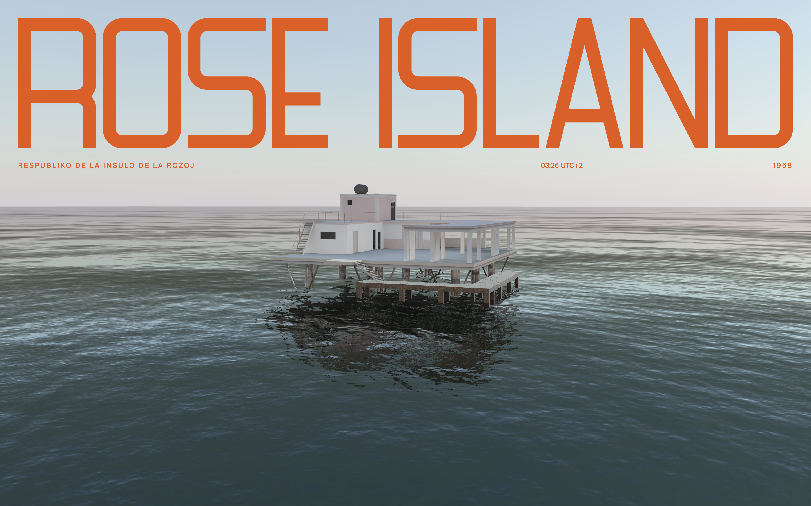
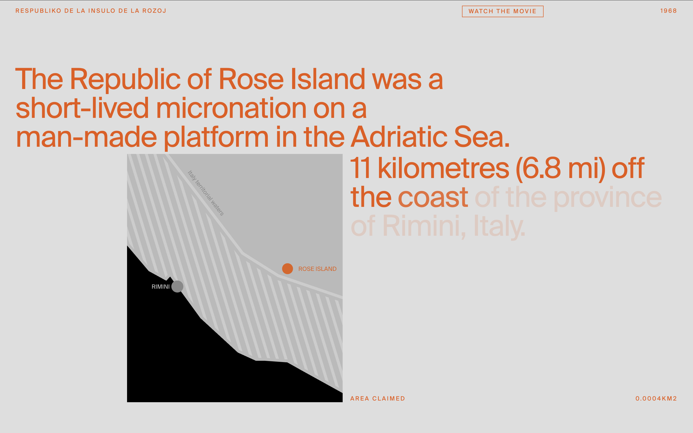

"Rose Land" is one of the movie I enjoyed watching. I did not know it has its own website until this time for gathering case study for interactive websites.
One unique characteristic of this website, is it minimise the way that user "interact" with webpage. Yes, it does has some interactive elements, but they are not clicking / hovering / dragging, just simply "scroll". One thing that I forgot when I do design, is that people sometimes scroll more over clicking and hovering elements. In my many works before, I often has interaction ready for user to click, but not when scroll.
"Rose Land" only display the most precise information that they want to display, and it only allows user to "scroll" over information, at some point, user can receive more information over having more freedom in the website (a bit contradicting with the point I made about "Marga Navarro" website). The percise information are also reinforced by the scrolling text effect which it highlight (added with colour) when user scroll through.
This kind of strategy ties user's attention and control the pace for the audience, it maximise the coverage of information pass through users.
Visit Rose Island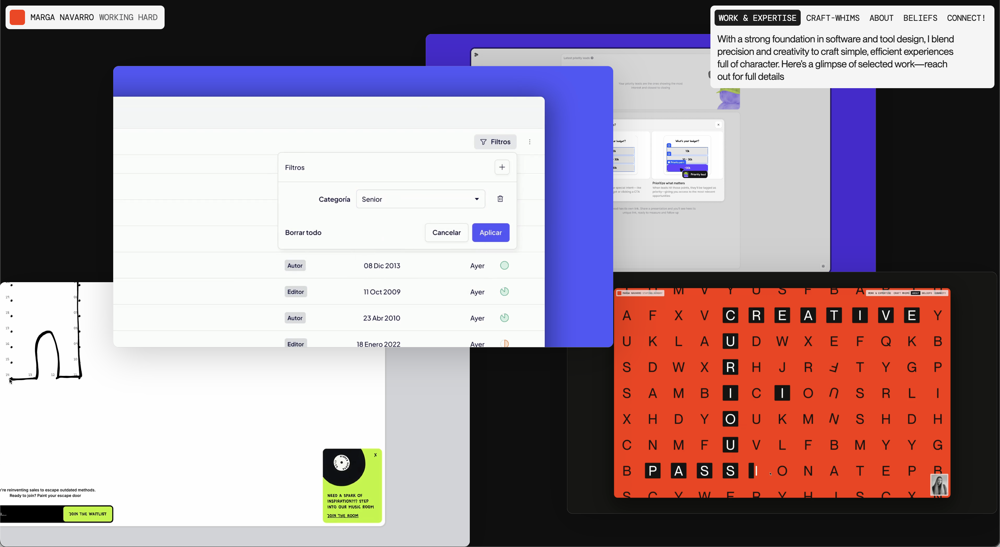
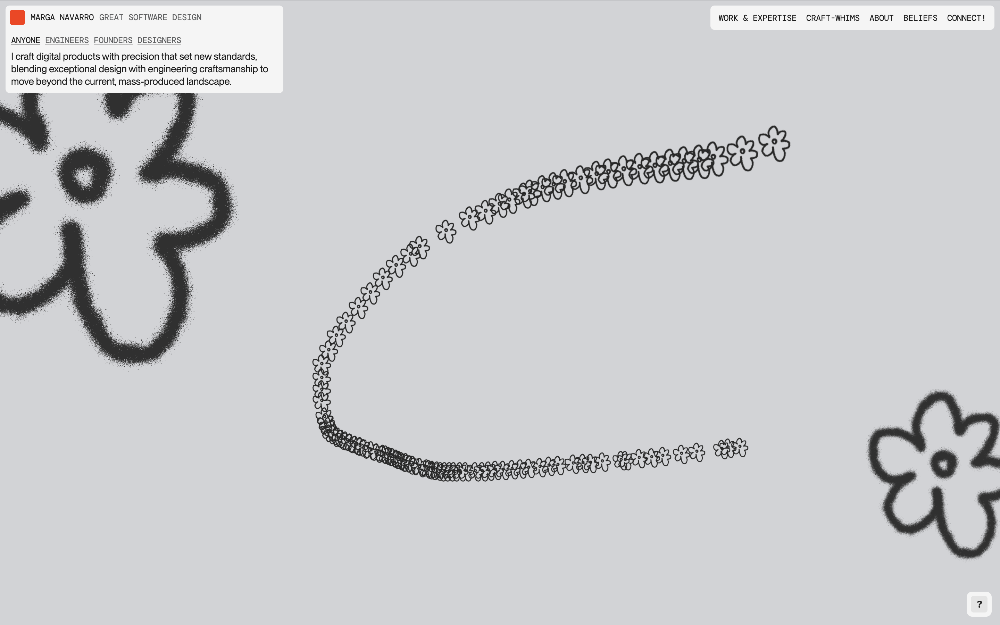
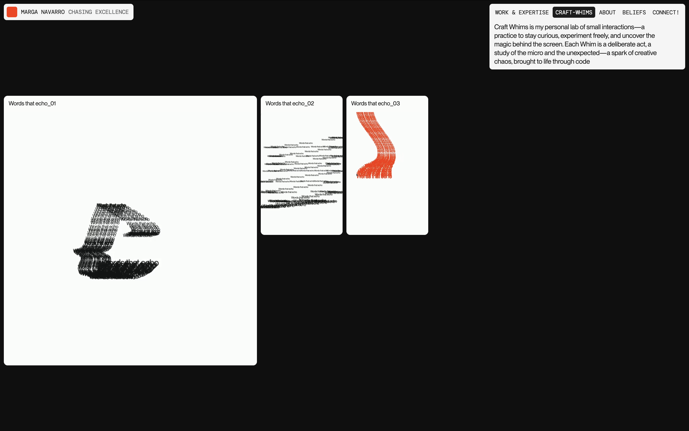
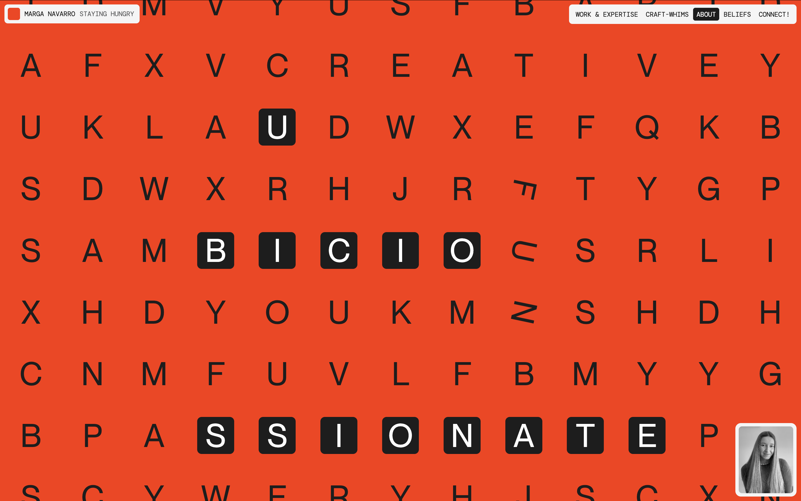
I really like Marga's website particularly about the feel of inconsistent but at the same time consistent (weird but let me explain).
When user navigate through her website, they would find how different compare to other websites navigation layout. She shares her thoughts / background story at the bottom of the nav bar. I think this is very smart in terms of the way user engage the webpage as well as saving space of other visual element (e.g. her actual work).
Each page in Marga's website has different interactive elements. In "Work & Expertise", she has her works layout randomly on the page that are free for user to dragging around, and this kind of freedom has given the user a feeling of control and friendliness; in "About", she play around with user's cursor, created a little cross-words-puzzle for user to interact and emphasis her characteristic using the same feature at the same time.
Her unusal way of layout information is very inspriational, so I often revisit her site to encourge myself for different design task.
Visit Marga Navarro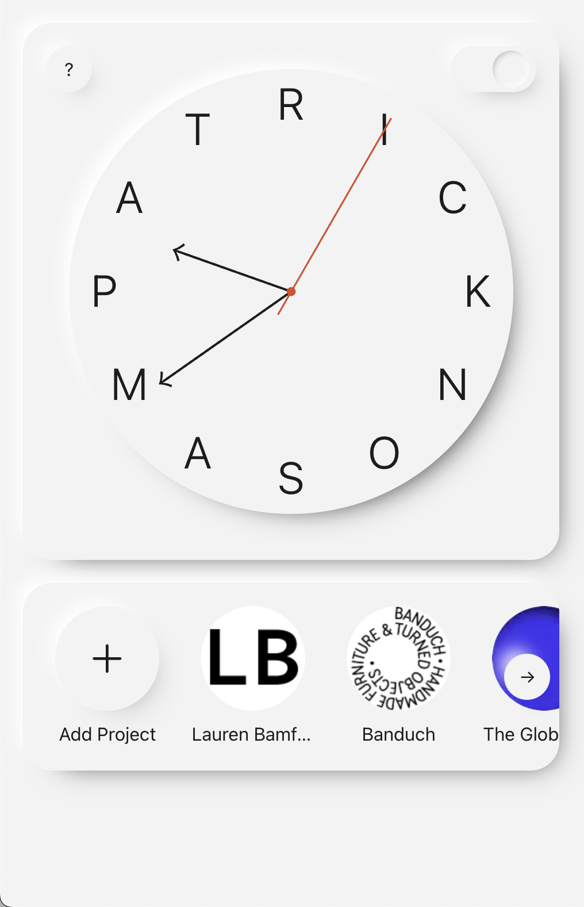
I felt weird when I first visited Patrick Mason's website. The content is position at the left on laptop, leaving a huge blank on the right side, which may or may not intentional, but I feel uncomfortable from the UX designer perspective.
Interestingly, the numbers on the ticking clock is actually "PATRICKMASON", I took a while to realised.
Each project is a enlargeable page when clicked, and styled like its own search engine where user see the website (work itself), the URL, and some tags that's relevant.
"Add project" does not mean user could add their project, it's a invatation, or, a way of welcoming people to connect with him, and "add project" to his dedicated passion. A smart way to turn contact into active motion from the user, and make people wanting to learn more about him.
Visit Patrickmason Studio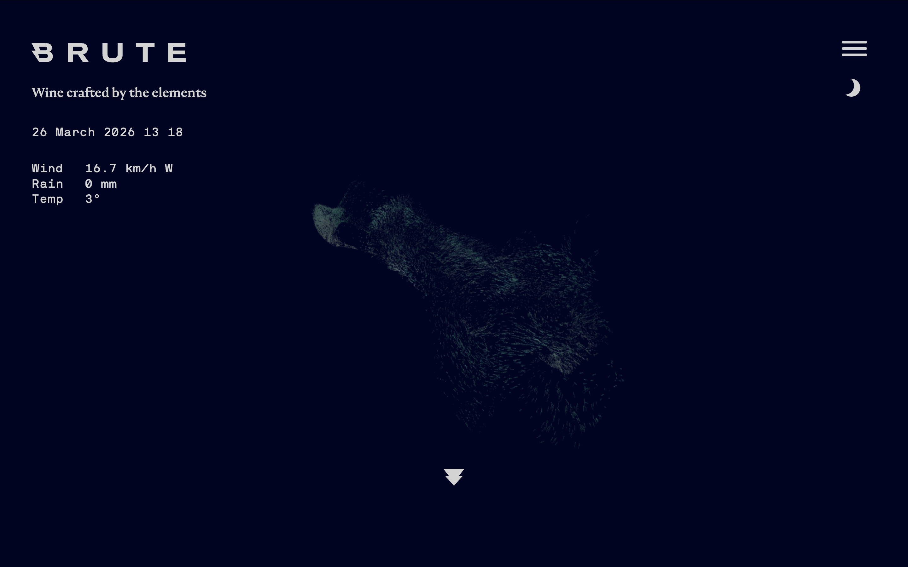
I wanted to highlight the landing page delay in Brute, that make people read before goes into the actual website; and the 3D interactive dimension of the wine bottle is very eye catchy for user to engage with their website, leading curiosity hence more website engagement and returning visits.
Visit Brute

I enjoyed the effect that it zoom in / out the whole frame (it is actually the background and the main interactive desktop).
Interesting concept of mixing a interactive area wrap with a background image and a retro desktop frame.
I did not dive deeper into the website content itself, but it's very unique way of interaction, make me think of one of the Oscar's Crazy 8 – the tree and goes into the truck.
Would you view this as a website? I think it's a form of website, but the objective of it is probably not served the same as many other websites on the internet.
Visit Movie Place Online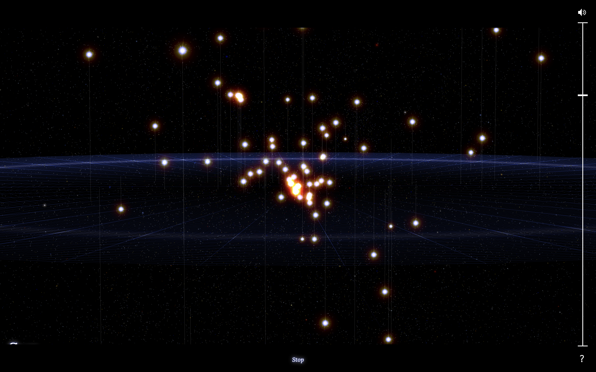
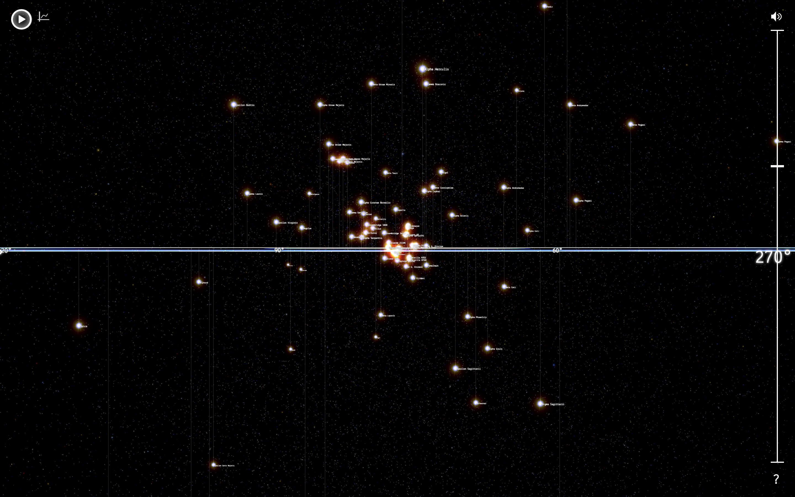
This is also a cool website for people interesting in space and galaxy.
Unlike the 3D dimension in "Rose Land" and "Brute", "100,000 stars" has created an actual space-like immersive environment for user to browse through.
It's quite easy to link this sort of 3D dimension when it's about outer-space, but it's incredible to see how smooth and high quality the elements are in the website
Visit 100,000 Stars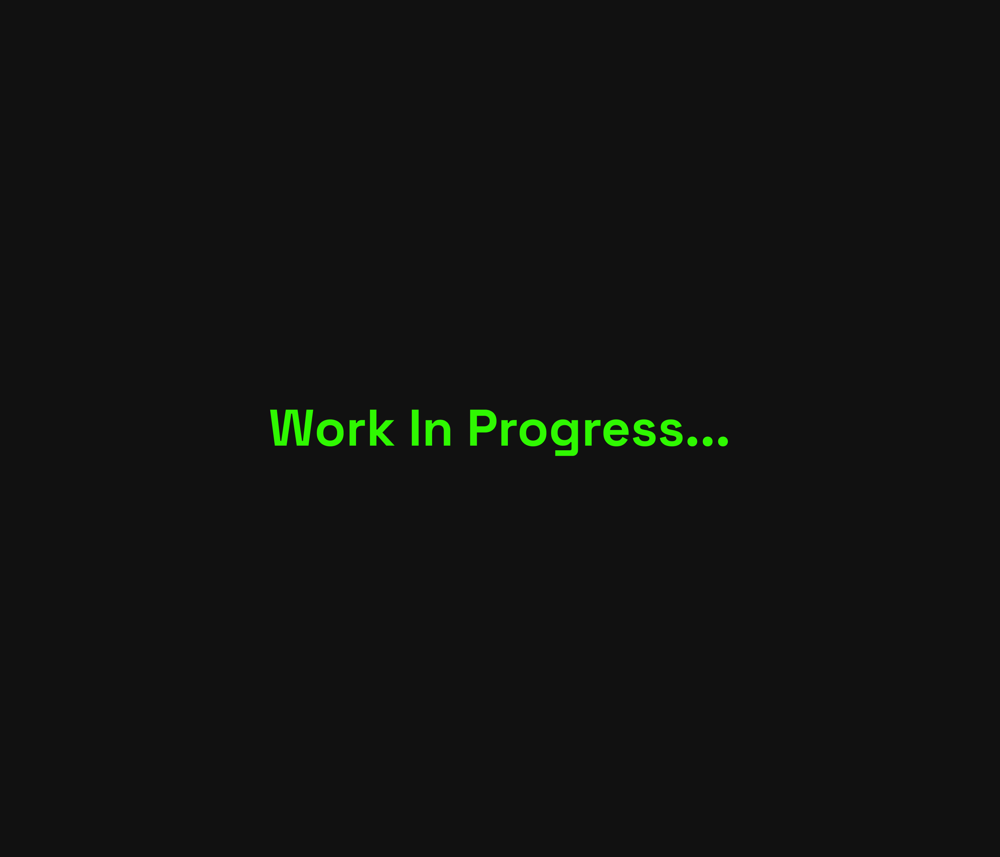
Words from my brain